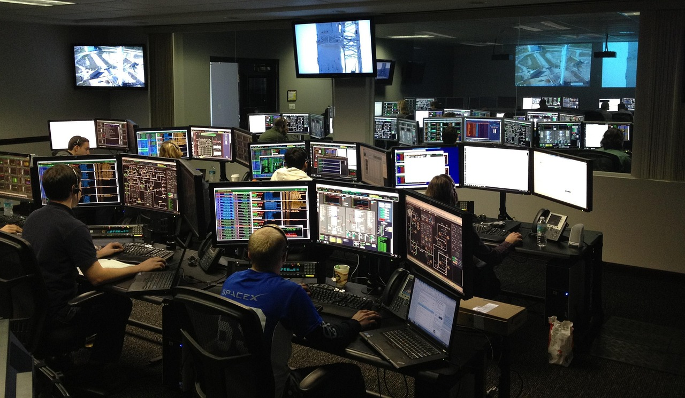
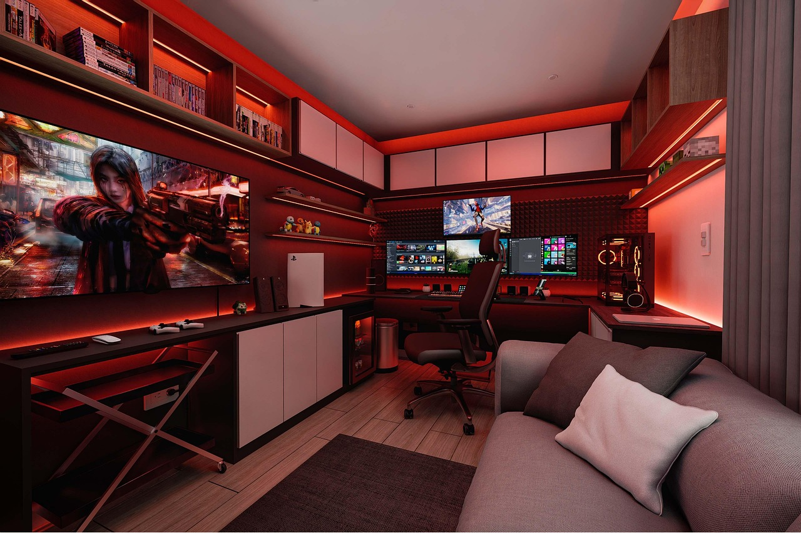

Na zdjęciu widać nasz zespół IT Kraft w trakcie obsługi klientów i monitorowania stron klientów. Nasi specjaliści czuwają nad bezpieczeństwem danych, sprawnym działaniem sieci oraz szybkim rozwiązywaniem problemów technicznych, zapewniając wsparcie na najwyższym poziomie.
Jedna z usług oferowanych przez IT Kraft — profesjonalna konfiguracja i administracja sieci komputerowych. Nasz zespół zajmuje się montażem, okablowaniem oraz utrzymaniem infrastruktury sieciowej, dbając o jej bezpieczeństwo, wydajność i niezawodność działania w firmach naszych klientów.

Realizacja projektów z zakresu rozwiązań multimedialnych i oprogramowania. IT Kraft tworzy i integruje systemy interaktywne oraz aplikacje komputerowe, wspierając firmy w rozwoju nowoczesnych technologii i cyfrowej komunikacji.

Jeden z pokoi gamingowych zaprojektowanych przez specjalistów IT Kraft. Nowoczesne stanowisko dla gracza zostało stworzone z dbałością o ergonomię, wydajność i estetykę. Nasz zespół zajmuje się kompleksowym doborem sprzętu, oświetlenia i konfiguracją systemów, aby zapewnić maksymalny komfort i najlepsze wrażenia podczas rozgrywki.